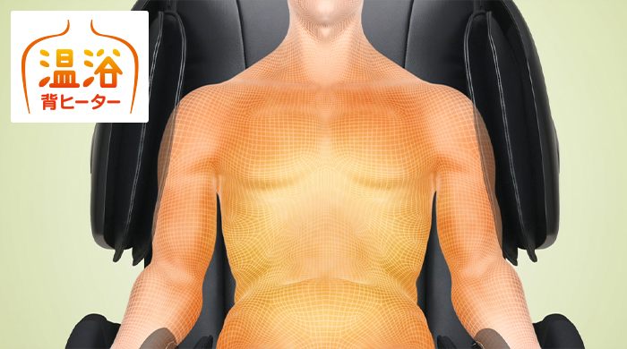

Fully equipped with massage function * 1
Compact model
Released in October 2021
Medical device certification number: 302ABBZX00043000
This product is for specific companies.

Feature 1Unique function
In order to realize a smoother massage, the "S-shaped fit frame" that curves along the body line from the neckline to the waist and the "360 degree rotation" that the fir ball rotates vertically and horizontally and strokes smoothly. "Fir ball" is used for the upper ball. The original "GRIP type mechanism 3.0" firmly loosens the stiffness.
Feature 2NEW
Equipped with 4 types of special courses: "specializing in neck and shoulders", "specializing in hips and hips", "healing", and "healing".
Firmly massage the areas where modern people feel particularly tired.
Feature 3
A total of 22 built-in air bags wrap the whole body and massage. In addition, it is equipped with a "foot stretch" that pulls down and massages the legs.
Feature 4Unique function
The back pad with a special structure that stores warm air warms the upper body over a wide area and supports massage more effectively.

Feature 5
When the legs are turned over, they become footrests, and you can stretch your legs and relax. You can use it as a reclining sofa by storing the footrest. Since it is equipped with a "slide reclining mechanism" that reclines while the seat surface slides forward, full reclining is possible if the rear space is 15 cm. It can also be installed in a limited space.
* 1 A massage chair with a wide range of treatment that combines mechanical and air
Anma, a substitute for massage. For general household use.
* All photos and illustrations are images.